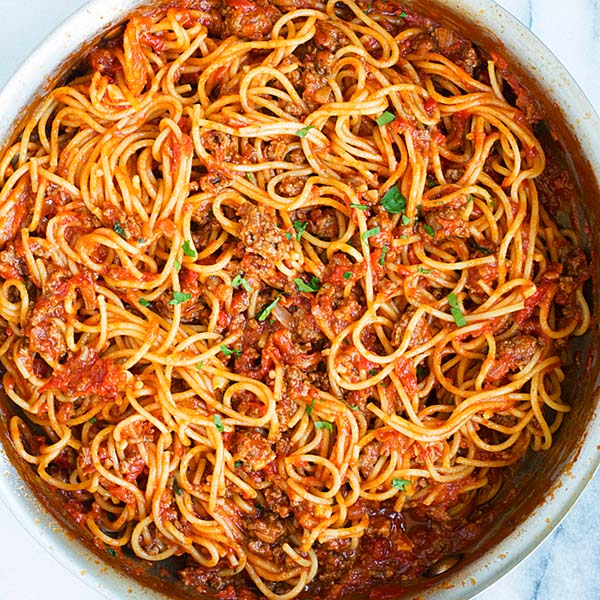
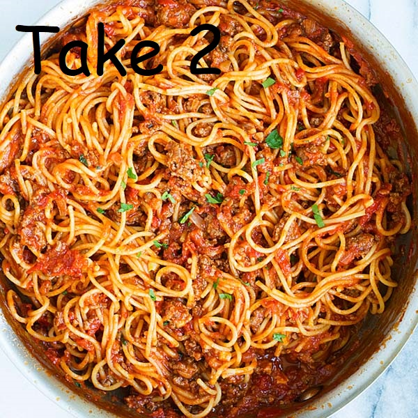

EVENTS
Wine Tasting April 32nd: Join us on April 32nd at 8 AM for a wine tasting hosted by Noodle Nest, The wines at this years tasting will be Barbera, Cabernet Franc, Cabernet, Sauvignon, Carignan, Charbono, Chardonnay, Dolcetto, and Gamay. Our previous wine tasting chapion will be making an appearence at our taste off, who can taste the most wine in the least amount of time? Find out on April 32nd!
Spaghetti Eating Contest Janurary 1st: Join us on Janurary 1st at 3 AM for our annual spaghetti eating contest. Eat your fill and try your mettle against our previous champion, John Doe who ate a miraculous 37 pounds of spaghetti last year. Our previous winner also has some advice for the new-comers, "MMmgmhfmmgmfmgmMMmghm try your best."
Spaghetti Eating Contest Janurary 3rd: Join us on Janurary 3rd at 1 AM for our annual spaghetti eating contest rematch. Try to beat our champion yet again as he lays waste to your pathetic attempts to eat as much spaghetti as him. All challengers welcome (some conditions apply*)! All will be brought before the champion to see if they are worthy of challenging him (*only those that participated in the previous spaghetti event will be allowed to enter.*)
Wine Tasting April 35th: Join us on April 35th at 6 AM for a wine tasting rematch hosted by Noodle Nest, The wines at this years tasting will be Mogen David Blackberry. This wine has been ranked worst in the world meaning onlly the worthy tasters can apprecite this masterful wine. Who can taste the most? Will you beat our champion?What does th worst wine taste like? Why is this a challenge and not a casual event? All these questions and more will be asked at the event. April 35th.